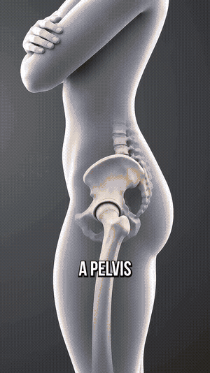
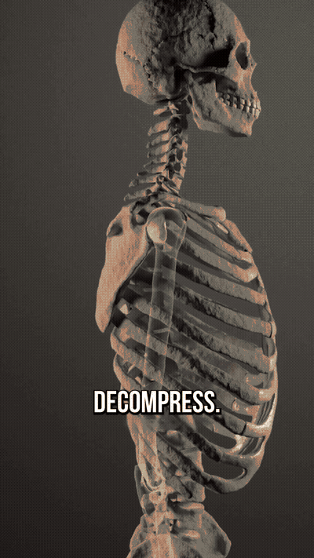
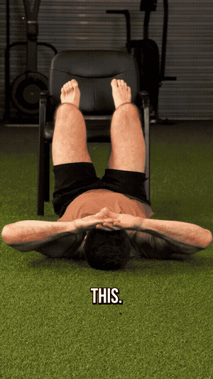
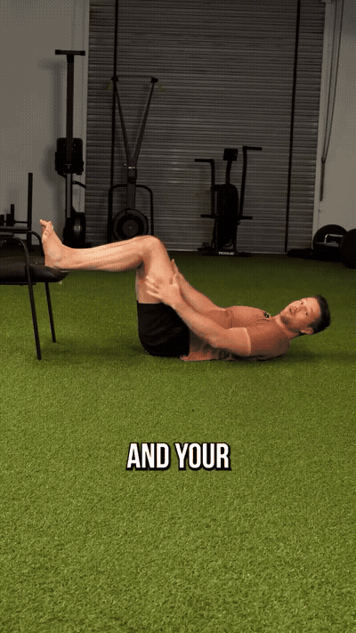

A pelvis stuck in anterior pelvic tilt can make the lower belly pooch out — but posture is a two-way street. If the pelvis tips forward, the body balances by rounding the shoulders and collapsing the front rib cage. Fix both, not just the pelvis.

Lie on your back with your feet up on a chair, knees and hips at roughly 90 degrees (a little further away is fine). Tilt the chin passively toward the ceiling and rest your hands on your forehead — no arm tension, chest open.

Drag down into the chair with the back of your heels. Hamstrings engage, the pelvis moves into a posterior tilt, and the low back flattens. Very gentle — about 2 out of 10 effort.

Exhale gently through an open mouth with a relaxed jaw for 5–10 seconds until the side abs engage. Pause, hold them gently, then inhale through the nose, letting the air fall in. Slow and passive — the front of the rib cage opens more each breath, no neck engagement.